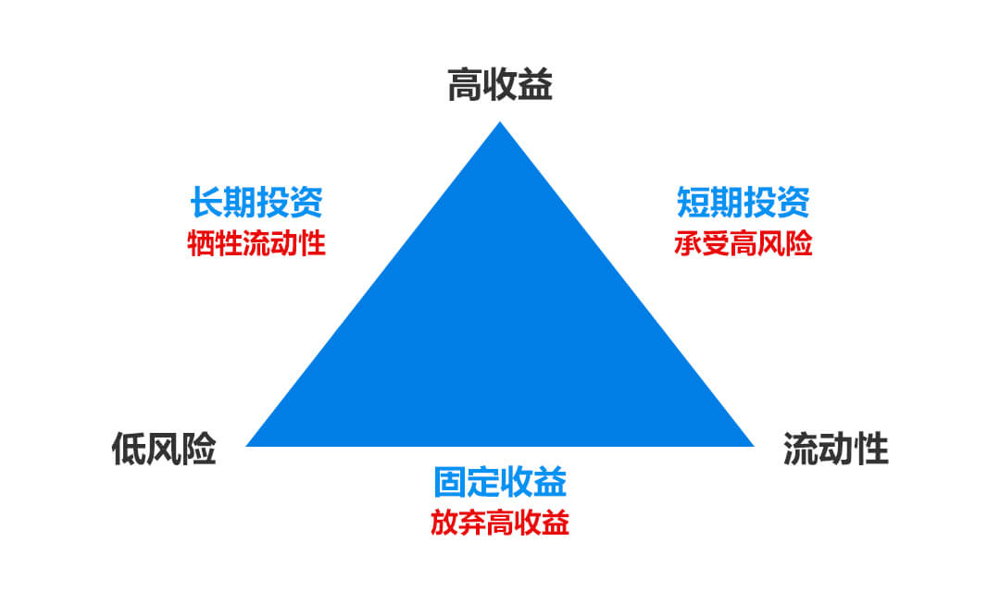
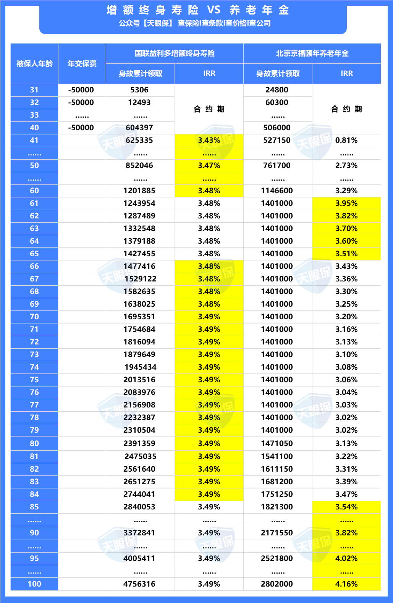
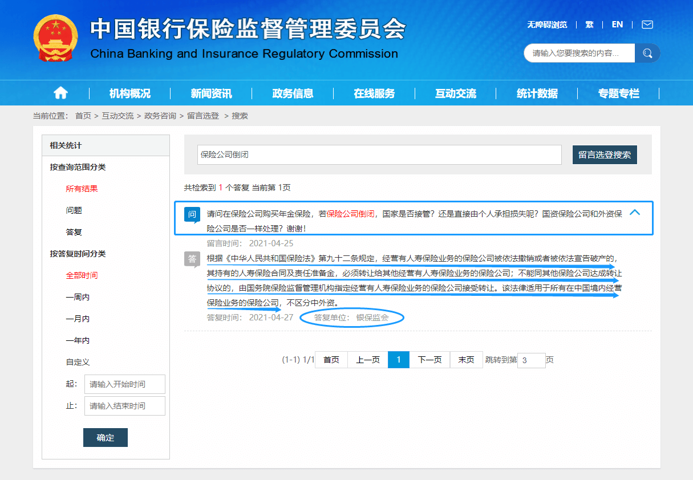
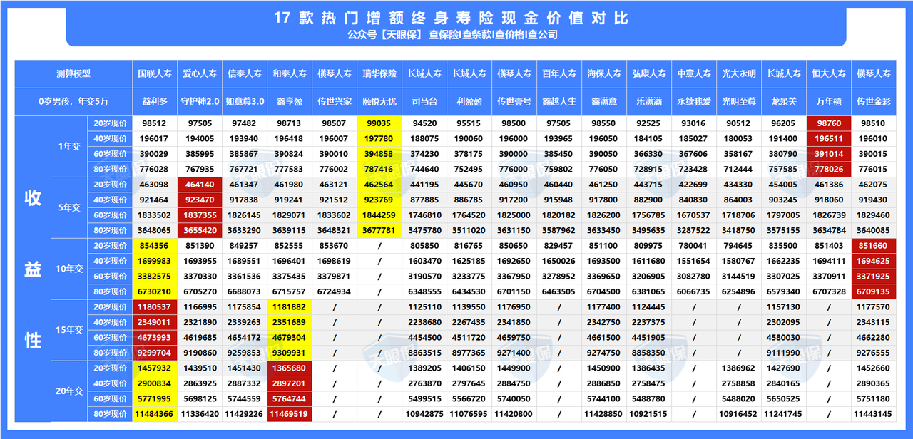
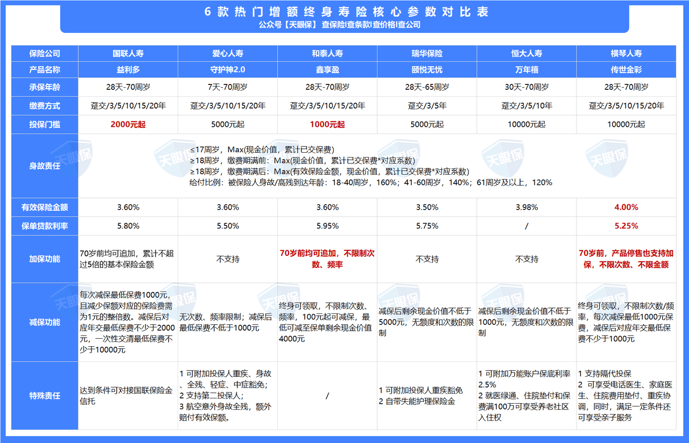
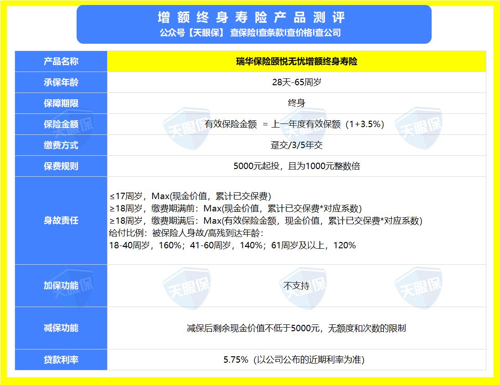

近期天眼君一直在做增额终身寿险的产品测评，想要把目前市场上每一款新上线的增额终身寿险，都给大家出一篇解读的文章，奈何产品太多，写文章又很费时间，实在更新不过来，所以，今天天眼君把我近期，对比的上百款增额终身寿险，总结一下，先给大家出一份推荐榜单，推荐榜单的同时，也会给大家分享一些我总结下来的经验，接下来，我会从以下三个方面来分享：
- 增额终身寿险和养老年金有什么区别？
- 如何挑选增额终身寿险？
- 上百款增额终身寿险大PK，我只推荐三款
不知道大家有没有听过，金融的 “不可能三角”理论，“不可能三角”理论是由2008年获 诺贝尔经济学奖获得者，美国经济学家保罗·克鲁格曼提出。 他主张在独立的货币政策、资本的自由流动和汇率的稳定这三者中间，一个国家或地区最多只能选择两个，三者不可兼得，这是相对于国家。
而相对于我们个人，大白话来讲，独立的货币政策代表的是 安全性，资本的自由流动代表的是灵活性，而汇率的稳定代表的是 收益性。那我们也通过这三点，来综合了解一下增额终身寿险和养老年金，具体有什么样的区别 ？
而相对于我们个人，大白话来讲，独立的货币政策代表的是安全性，资本的自由流动代表的是灵活性，而汇率的稳定代表的是收益性。那我们也通过这三点，来综合了解一下增额终身寿险和养老年金，具体有什么样的区别 ？
接下来我们以增额终身寿险中的老大哥——国联益利多，和养老年金中的老大哥——北京京福颐年为例，来进行对比：
从收益的角度，我们知道，根据监管的需要，目前增额终身寿险内部收益率的上限是3.5%，也就是内部收益率无限接近于3.5%的增额终身寿险，就是最好的了，而养老年金我们会发现，有不少产品预定利率可以达到4.0125%，那这里，可能就会有朋友说，那是不是从收益性来讲，好的养老年金会比增额终身寿险更好呢？
这个答案是否定的，接下来，我们以实际产品为例，由于养老年金和增额终身寿险领取方式区别比较大，所以天眼君以30岁男性，年交5万，交10年，不同年龄段身故，累计领取的总金额来核算内部收益率（IRR）：
通过上图我们会惊奇的发现，同样性价比天花板的产品，增额终身寿险的内部收益率是非常稳定的，而养老年金更像是在坐“过山车”。
- 60岁前：增额终身寿险内部收益率更高
- 61-65岁：养老年金内部收益率更高
- 66-84岁：增额终身寿险内部收益率更高
- 85岁后：养老年金内部收益率会更高
也就是说，从收益的角度，只有在60岁-65岁之间身故，或者85岁后身故，养老年金的收益才会超过增额终身寿险，而60岁前，包括66岁到85岁区间，都是增额终身寿险更加占有优势。
看完收益性，那我们再看看灵活性，养老年金优势，我们在前面已经讲到了，是确保我们有一笔活到老领到老的退休养老金，活的越长越划算，那同时，养老年金最大的弊端，也就是在灵活性方面，一旦设定好领取的时间和金额，就不能任意更改。
比如，按照京福颐年，按照30岁男性，年交10万，交10年，产品的约定是，从60岁开始，每年领取70050元，是不能提前领，也不能推后领，一旦中途领取，对于我们账户价值就会产生非常大的影响，所以，灵活性偏差。而相比于养老年金，增额终身寿险灵活性就非常强了，增额终身寿险账户的现金价值就类似于我们银行卡的余额，一款好的增额终身寿险，是什么时候领钱，想领多少，完全自由的，所以灵活性非常强。
除了收益性和灵活性，想必我们大部分朋友，更加关心的，一定是安全性方面，比如说，这家保险公司我没听过，安全吗？
一定是安全的，为什么呢？我们看上图，是从中国银保监会官网，留言选登中截图出来的：
我们所有人寿保险公司销售的保险产品，都受《保险法》的保护；万一保险公司破产，需将保单及责任准备金转让给其他保险公司，自行转让不成功的，由国务院保险监督管理机构指定转让，我们的权益都是白纸黑字约定在合同条款中的，不用有任何担忧。
总结一下，养老年金，寿命越长收益越高，同时因为灵活性偏差，所以，对自己寿命预期比较高，同时平时花钱没什么节制，就想自己养老的时候，每年能领取一笔确定的钱的，可以考虑挑选一款不错的养老年金；而如果对取钱灵活性要求比较高，也希望自己收益更加稳定的，那就重点推荐增额终身寿险，这篇文章，重点给大家分享增额终身寿险，想要了解更多养老年金或者分红万能保险产品测评的，记得在下方留言，或者关注天眼君，定期干货分享哦。
【免费咨询】养老年金和增额终身寿险哪个好？
增额终身寿险产品虽然很多，但想要挑选一款适合自己的，还是非常容易的事情，我们只需要知道挑选增额终身寿险的标准，哪个产品更好，自然能够一目了然，那怎么挑选增额终身寿险呢？
增额终身寿险账户中的现金价值，其实就是我们的账户余额，缴费金额和缴费年限固定的情况下，哪款产品现金价值高，自然产品的收益就越高，所以挑选增额终身寿险，一定要看现金价值高低。
- 趸交，收益第一的是瑞华保险颐悦无忧，收益第二的是恒大人寿万年禧；
- 5年交，收益第一的同样是瑞华保险颐悦无忧，收益第二的是爱心守护神2.0；
- 10年交，收益第一的是国联人寿益利多，收益第二的是横琴传世金彩；
- 15年交，收益第一的是和泰人寿鑫享盈，收益第二的是国联益利多
- 20年交，收益第一的是国联人寿益利多，收益第二的是和泰人寿鑫享盈。
单纯追求收益的朋友，可以根据自己想要的缴费年限，选择对应的收益高的产品，当然，也提醒下大家，其实增额终身寿险收益排名前5的产品，收益虽有高低，但差距实际非常小，收益差距不大的情况下，还是非常建议关注一下增额终身寿险的附加价值。
加保，也就是灵活追加的功能，即现在买完之后，过几年，或者十几年后，如果手里有闲散资金，是否还能继续往账户追加？目前的加保功能，分为三大类：第一类产品是不支持加保；第二类产品是支持缴费期内加保，产品停售后不能加保；而第三类产品是即使产品停售之后，也能加保。
减保，也就是灵活取钱的功能，目前市场上大部分增额终身寿险，取钱时间和取钱金额，可以说是完全自由的，但也需要注意一下，部分产品取钱是有限制的，比如，单年最多领取20%基本保险金额等等约束条件，我们挑选的时候，尽可能去挑选一款减保没有附加限制的产品。
为了方便大家直观的感受到不同产品的优劣势，天眼君特意把1年交、5年交、10年交、15年交、20年交，几种缴费方式中，收益排名前两名的增额终身寿险，统计出来一共6款产品，把他们的核心参数整理了出来，包括了常规责任，加减保功能，贷款利率，以及其他增值服务，可以发现：
加保最灵活的是和泰鑫享盈和横琴传世金彩，国联人寿益利多加保功能中规中矩，而爱心守护神2.0、瑞华颐悦无忧和恒大万年禧都不支持加保功能；减保各大公司相差不大，都非常灵活。
除了基础的收益看现金价值，存钱取钱的灵活性上面看加减保功能以外，对于有特殊需求的朋友，我们还需要关注一下增额终身寿险，是否有其他的增值服务，据天眼君了解，目前增额终身寿险已有的增值服务：
- 养老社区服务：比如泰康保险、太平保险、光大永明，恒大人寿都有开放养老社区的服务
- 保险金信托服务：比如国联人寿
- 医疗服务体系：比如横琴人寿、瑞华保险
- 细胞冻存服务：比如弘康人寿
- 保单贷款：保单贷款各大保险公司基本上都支持，但也要看看利率，以及规则的灵活性。
那这些服务，到底有没有实质性的作用，以及不同的增值服务，更加适合哪类人群，后期天眼君也会专门出文章，为大家解析，想要了解的朋友，记得关注天眼君，每天都有干货分享。
弄懂以上三点，轻松挑选到好的增额终身寿险，如果不清楚每个产品现金价值，加减保功能如何，以及有无其他增值服务的朋友，可以在评论区留言，天眼君会一一给大家解答。
点击这里，教你如何避开年金险投保误区
通过测评了全网上百款增额终身寿险，我只推荐这三款：
优势：
- 短期快返收益王，0岁男孩，5年交，每年交5万，第6年账户价值285156 元，交完账户即产生了35156元的利息，折算平均年化单利为4.68%，对于有中期理财规划的朋友，这款产品都是非常不错的选择。
- 自带失能护理保险金，被保人因意外伤害或则等待期后经指定的鉴定机构诊断因疾病导致丧失日常生活能力且持续至观察期结束，可以按照约定提前申请赔付，新增了这项责任，还是非常的人性化。
劣势：
最长只能选择5年交，而且，后期不支持加保，有加保需求的朋友，自行略过。
优势：
- 收益行业一流，10年交收益仅次于国联人寿益利多，排列第二
- 加减保功能超级灵活，且写进合同。当下锁定一个复利账户到终身，如果后期，几年后，或者十几年后，手里有了多余的闲散资金，又没有更好的打理渠道，可以继续追加进入这个账户，而且享受现在的利率。
- 保单贷款功能好，最高可贷款的金额为账户现金价值的80%，每6个月返还本金和利息，但如果6个月后需要继续借贷，可以先还利息，后续再还本来，而且贷款利率相对偏低
劣势：
投保门槛相对较高，1万起投，同时，健康告知要求比较严格，所以，对于预算有限的，和身体有部分指标异常的朋友，不太友好
综上所述，横琴传世金彩，特别适合为养老保险做储备，尤其适合后期还有追加需求的朋友。
优势：
- 综合性价比超高，10年交、20年交收益之王。
- 投保门槛低，2000元即可投保，加保、减保都相对比较灵活
- 满足一定条件，可对接保险金信托
劣势：
贷款利率偏高，有贷款需求的朋友，这款产品不太适合
综上所述， 国联益利多，超级适用于给自己储备养老金，和给7岁以下小孩储备教育金，选择10年交，收益可实现最大化，同时，因为投保门槛低，2000即可投保，健康告知也非常宽松，这款产品几乎所有家庭都适用。
【爆款推荐】盘点2022年最值得入手的年金险/增额终身寿
写到最后，天眼君也要特别提醒大家：
1）增额终身寿险给自己做养老保险，给孩子做教育金、婚嫁金储备，或者5年以上闲散资金打理，都是非常不错的选择
2）虽然增额终身寿险减保灵活，但增额终身寿险，在保费没交完期间，并不适合领钱，如果短期，5年内有动用资金需求的朋友，不适合增额终身寿险，5到10年内需要动用资金的朋友，一定要挑选回本更快的产品。
3）挑选增额终身寿险，写进合同的利率为有效保险金额的递增利率，只跟身故利益有关，跟我们取钱没有任何关系，具体什么是有效保险金额，后期天眼君也会出专门的文章来介绍，不清楚的朋友，都可以提前关注天眼君，每天都有干货分享哦。

点击这里，领取超高收益增额终身寿险榜单
阅读原文
分享
收藏
36
16